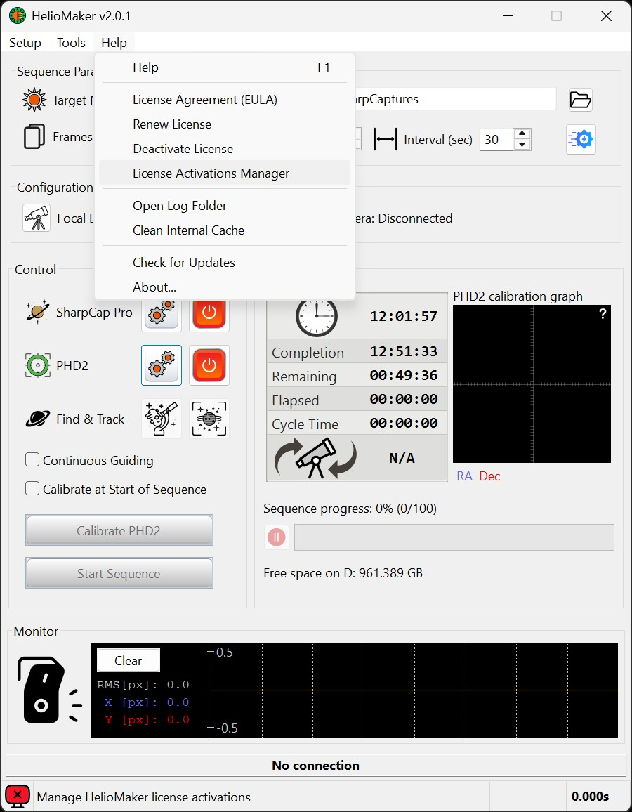
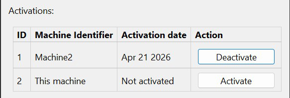
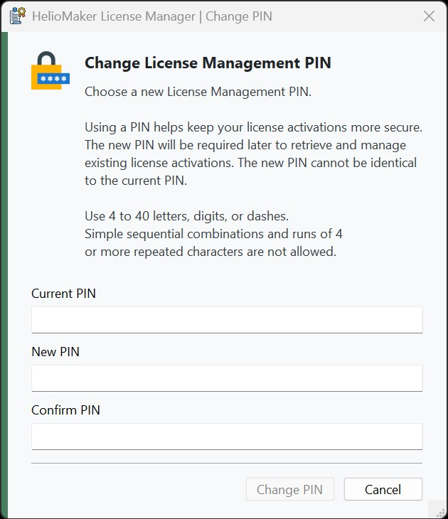
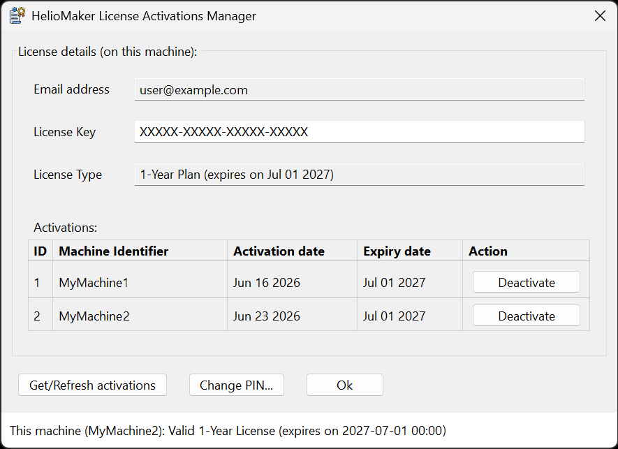

HelioMaker includes several license management functions, accessible from the Help menu. The central tool for reviewing and maintaining activations is the License Activations Manager.

The Activate License option allows you to activate your HelioMaker license on the current machine and for the current user. This requires the license key and email address used during the purchase. After a successful activation, HelioMaker may also prompt you to create a License Management PIN if that license is not yet protected.
The Deactivate License option deactivates the license on the current machine. This is useful when moving the activation to another computer or when freeing one of the allowed activation slots.
The License Activations Manager displays all activations associated with the provided license key and email address. To retrieve the list, enter the license details and, when prompted, the License Management PIN for that license.
Each listed activation row includes its own Deactivate button. Click the button in the row of the machine you want to deactivate, then confirm the action. This allows flexibility for users with multiple computers, as the HelioMaker license permits up to two active activations in accordance with the End User License Agreement (EULA).
If the current computer is not yet activated for the selected license, the activation list can also include a special row for This machine. In that row, the activation date is shown as Not activated and the action button changes to Activate, allowing you to activate the current computer directly from the License Activations Manager.

The License Activations Manager also lets you maintain the PIN that protects activation management. In practice, this is similar to adding a password that helps protect your existing licenses. If someone else gains access to your license key and email address, activation management still requires a secret known only to you. The PIN protects activation-management actions only and does not affect normal use of a copy of HelioMaker that is already activated.

The Renew License option is intended for users who are renewing from an existing 1-year license to a new license. When the renewal conditions are met, HelioMaker can carry over remaining days from the old license to the new license. This can be used when renewing to another 1-year plan or upgrading to a lifetime license.
HelioMaker supports a floating license scheme that allows users to maintain licenses on up to two computers they own. To activate the current computer, use the Activate button shown in the This machine row when that row appears. To deactivate a license from a specific computer, locate the correct machine entry and click that row's Deactivate button.

Note: The exact dialog layout may vary slightly between releases, but current versions use dedicated action buttons in each row, including Deactivate for existing activations and Activate for the current machine when it is not yet activated.
Important Security Notice: Your product key, license key, associated email address, and License Management PIN are for your personal use only. To maintain the security of your license, please avoid sharing any of this information with others. Unauthorized sharing may lead to the suspension or termination of your license.
Note: An active internet connection is required for all license operations.